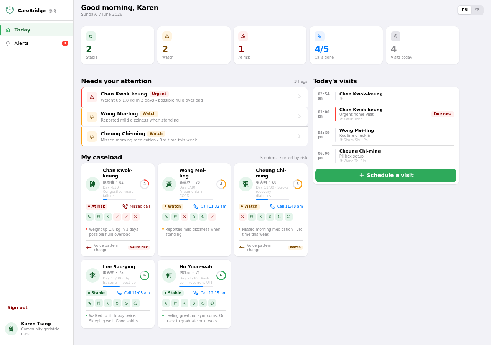

A frictionless daily phone call, a reassuring family app, and one dashboard that keeps five elders from falling back through the gap.

Each role sees only what they need. Information flows from the daily call into a shared picture — acted on by family and social worker alike.
Interactive, hi-fi, bilingual. Start with the social worker dashboard — it's the core of the product.
Caseload of five discharged elders. Daily ADL tracking, readmission-risk triage, alerts, voice biomarker trends inline per elder, and a deep-dive drawer. EN / 中文.
One screen. Big status, plain-language call summary, and nudges only when something matters.
How the frictionless check-in works — and what it quietly captures in the background.
CareBridge closes it — with a phone call, a reassuring app, and a dashboard that makes five elders feel like one social worker's full-time focus.
Open the dashboard →